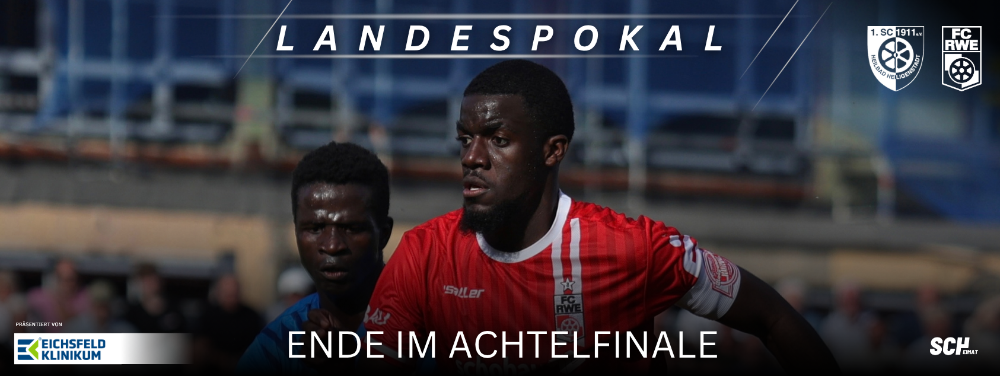
Ende im Achtelfinale
Früher Rückstand, lange in Unterzahl: SCH scheidet gegen Erfurt aus Die Überraschung im Gesundbrunnen ist ausgeblieben. Unser SCH hat das Achtelfinale im Thüringer Landespokal gegen den FC Rot-Weiß Erfurt mit 0:5 (0:3) verloren. Drei Gegentore vor der Pause und der Platzverweis gegen Maciej Wolanski machten
Beitrag lesen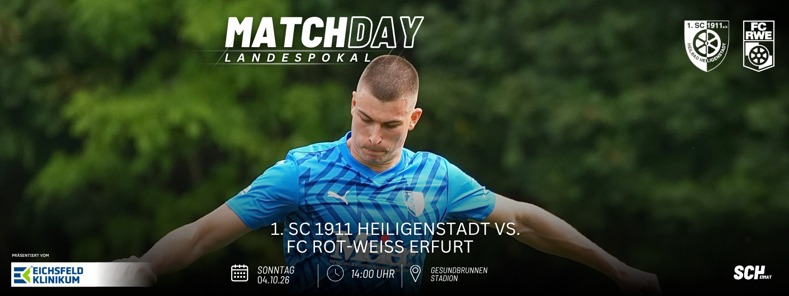
MATCHDAY! AM SONNTAG
Pokal im Gesundbrunnen: Ein besonderer Gegner, eine eigene Geschichte Der FC Rot-Weiß Erfurt gastiert in Heiligenstadt. Um 14 Uhr trifft unser SCH im Gesundbrunnenstadion auf den Regionalligisten aus der Landeshauptstadt. Ein Achtelfinale, das sportlich viel verlangt und unserem Verein einen besonderen Heimspieltag beschert. Für unseren
Beitrag lesenParksituation zum Landespokal-Achtelfinale
Für das Landespokal-Achtelfinale gegen den FC Rot-Weiß Erfurt gilt eine geänderte Verkehrs- und Parksituation rund um das Gesundbrunnenstadion. Bitte berücksichtigt die folgenden Hinweise bei eurer Anreise. Aufgrund verkehrsrechtlicher Anordnungen der Stadt Heilbad Heiligenstadt sowie der aktuellen Umbaumaßnahmen am Stadiongebäude gelten folgende Regelungen: Sperrung am Leineberg
Beitrag lesenAKTUELLE SPIELE
1. Mannschaft · Verbandsliga
Unsere 2. Mannschaft · Kreisoberliga
Unsere Jugendmannschaften · Team auf jeder Spielkarte
Stand: 05.10.2026 · Ergebnisse: SCH / FUSSBALL.DE · Terminänderungen möglich.
WAS LÄUFT WEITER BEIM SCH?
Alle Nachrichten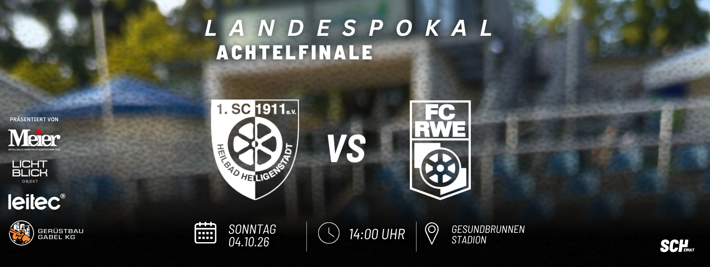
Alle unsere Spiele am Wochenende
🔜 SCHRWE Achtelfinal Landespokal 🆚 FC Rot-Weiß Erfurt 🕒 Sonntag 04.10.26 | 14:00 Uhr 🏟️ Gesundbrunnenstadion 💻 Der ausführliche Liveticker auf: https://t1p.de/llxkm 🎥 Zur Liveübertragung: https://t1p.de/hnpps Auf geht`s 💙🤍 Unsere Spiele am Wochenende – alles im Überblick. Reserve
Beitrag lesen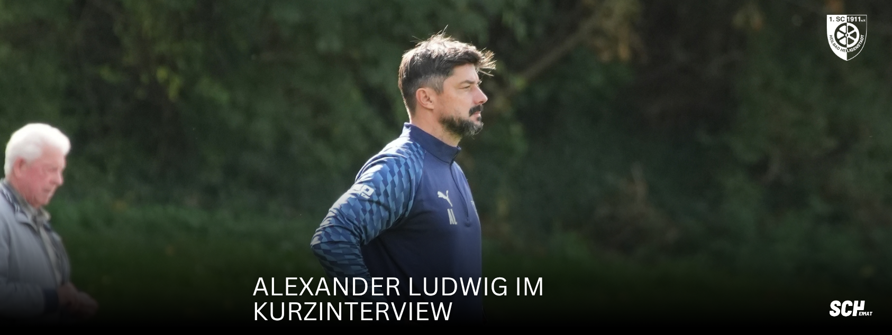
Mutig ins Pokalspiel: Alexander Ludwig im Kurzinterview
Alexander Ludwig: „Als Mannschaft zusammenhalten und mutig spielen“ Im Kurzinterview vor dem Pokalspiel gegen den FC Rot-Weiß Erfurt spricht unser Trainer Alexander Ludwig über die Rolle unserer Mannschaft, die sportliche Aufgabe und die Unterstützung am Gesundbrunnen. Alex, was
Beitrag lesen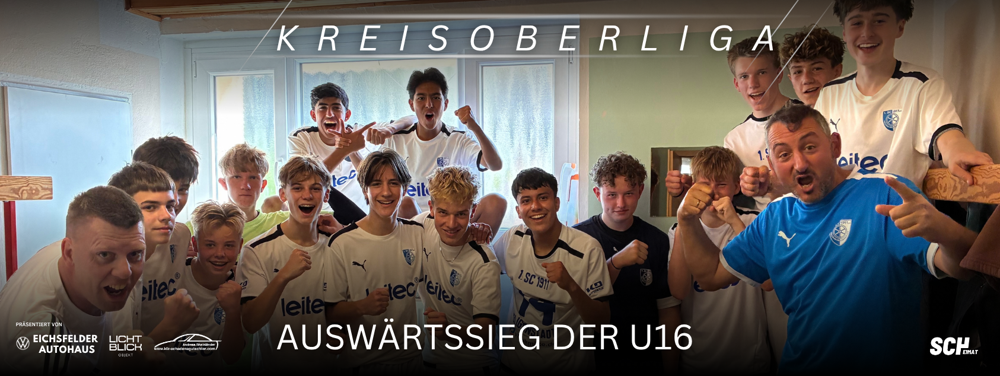
Auswärtssieg der U16
Doppelschlag vor der Pause, fünf Tore auswärts: Unsere U16 überzeugt in Gerbershausen Drei Punkte, fünf eigene Treffer und eine Leistung, mit der das Trainerteam zufrieden sein konnte: Unsere B2-Junioren haben ihr Auswärtsspiel bei der DJK SV Arenshausen mit
Beitrag lesen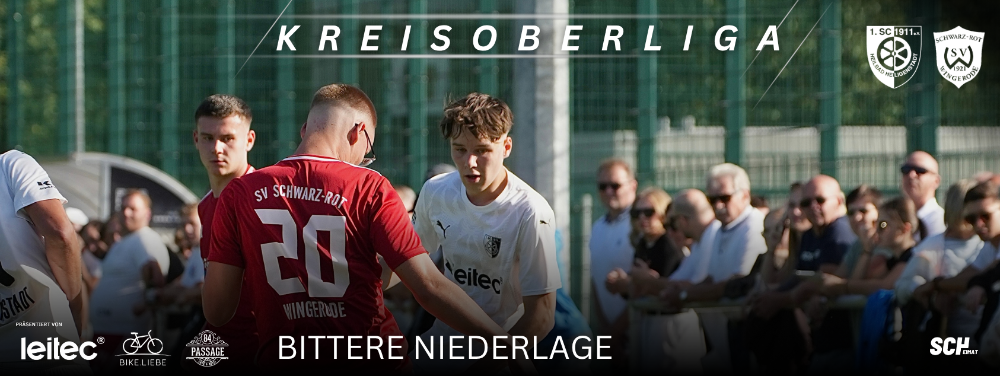
Bittere Niederlage
Ein Tor entscheidet: Papst-Elf lässt gegen Wingerode Punkte liegen Es war mehr möglich an diesem Sonntagnachmittag. Unsere zweite Mannschaft musste sich der SG SV Schwarz-Rot Wingerode auf dem Kunstrasenplatz am Gesundbrunnen mit 0:1 (0:0) geschlagen geben. Vor 99
Beitrag lesen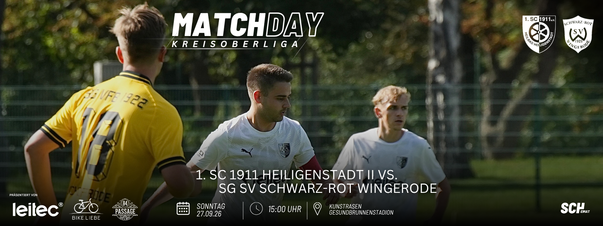
MATCHDAY AM SONNTAG
Spitzenreiter zu Gast: Papst Elf empfängt Wingerode Der Sonntagnachmittag am Gesundbrunnen verspricht ein interessantes Duell. Um 15:00 Uhr empfängt unsere zweite Mannschaft die SG SV Schwarz Rot Wingerode auf dem Kunstrasenplatz. Die Gäste reisen als Tabellenführer in die
Beitrag lesen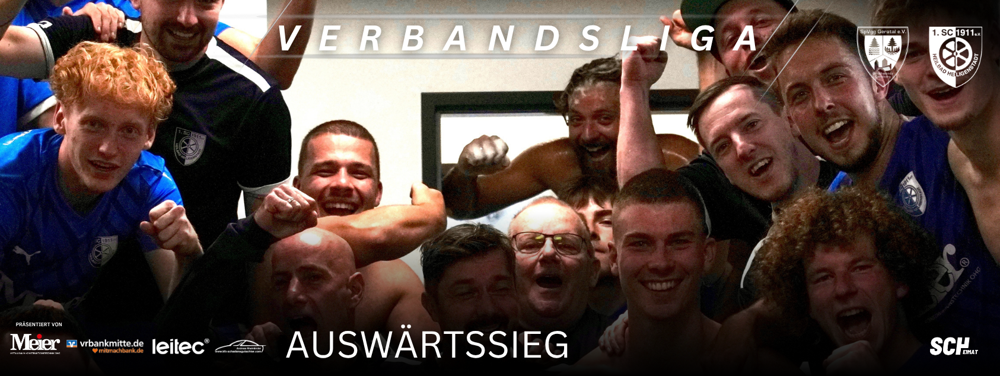
AUSWÄRTSSIEG
Geduld belohnt: Wolanski schießt die Ludwig-Elf zum Auswärtssieg Ein Pfosten, ein Querbalken und lange kein Tor. Die Ludwig-Elf musste am Samstagnachmittag in Geraberg viel Geduld aufbringen, belohnte sich aber doch noch für einen über weite Strecken bestimmenden Auftritt.
Beitrag lesen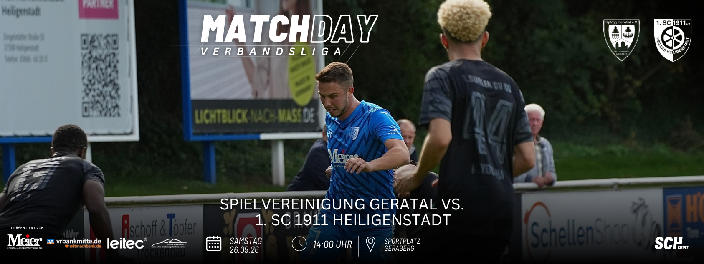
MATCHDAY! AM SAMSTAG
Am Nordrand des Thüringer Waldes: SCH will in Geraberg nachlegen Der siebte Spieltag führt unsere Mannschaft heute nach Geraberg. Um 14 Uhr trifft die Ludwig Elf auf dem Sportplatz Geraberg auf die SpVgg Geratal. Nach dem überzeugenden Heimsieg
Beitrag lesen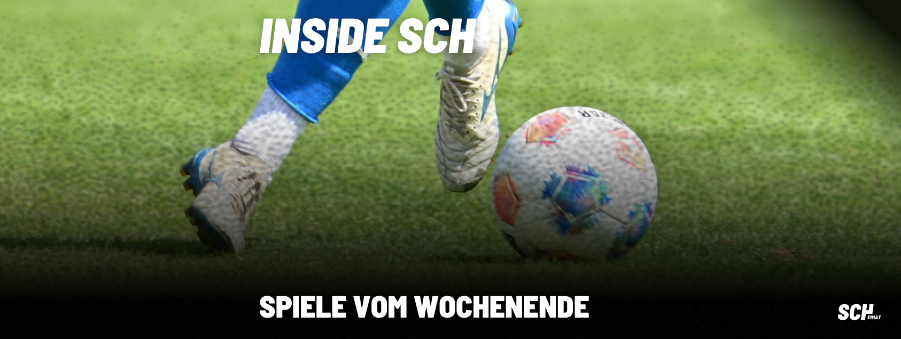
Alle unsere Spiele am Wochenende
🔜 SPVGSCH 7. Spieltag Verbandsliga 🆚 Spielvereinigung Geratal 🕒 Samstag 26.09.26 | 14:00 Uhr 🏟️ Sportplatz Geraberg 💻 Der ausführliche Liveticker auf: https://t1p.de/6govj Auf geht`s 💙🤍 Unsere Spiele am Wochenende – alles im Überblick. Reserve KREISOBERLIGA So, 20.09.26
Beitrag lesen
UNSER VEREIN.
UNSERE HEIMAT.
Seit 1911 gehört der SCH zu Heiligenstadt. Hier kommen Menschen zusammen, die Fußball lieben und ihren Verein mit Leben füllen.
Gemeinsam etwas bewegenKLEINE KICKER.
GROSSE FREUDE.
Du möchtest beim SCH Fußball spielen? Unsere Geschäftsstelle hilft dir, die passende Mannschaft und einen Termin zum Kennenlernen zu finden.
Probetraining anfragenMITTENDRIN.
STATT NUR DABEI.
Als Mitglied, Helfer oder Partner: Es gibt viele Wege, den SCH zu unterstützen.
Mitglied werdenSTARKE PARTNER. STARKER VEREIN.
Danke an alle Unternehmen und Unterstützer an unserer Seite.
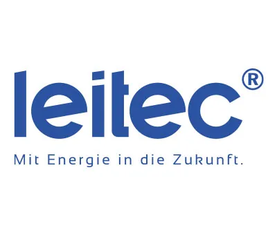
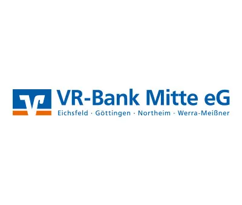
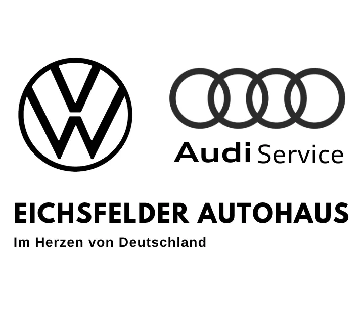
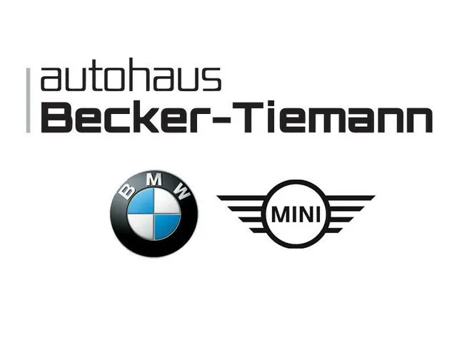
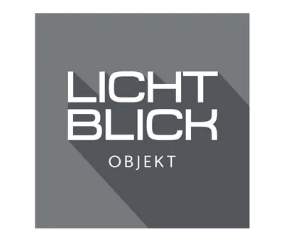
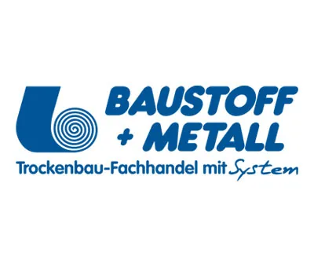
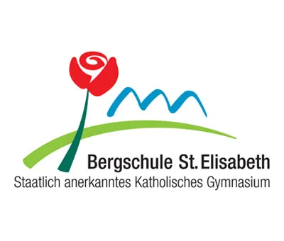
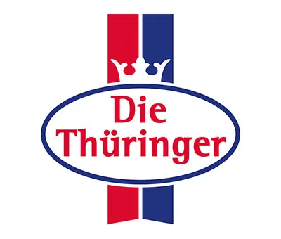
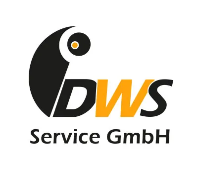
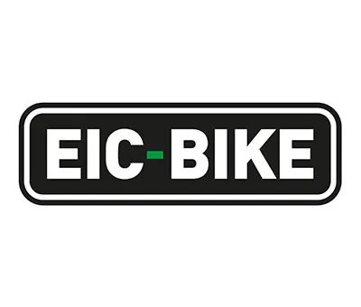
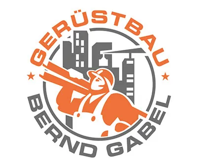
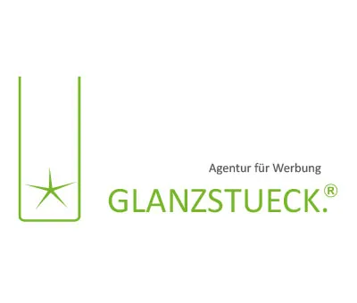
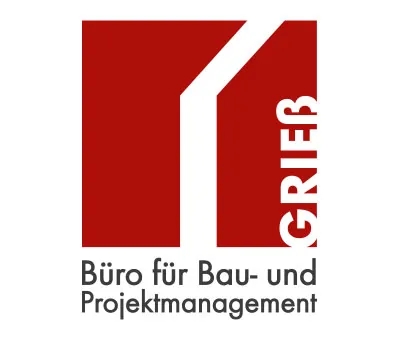
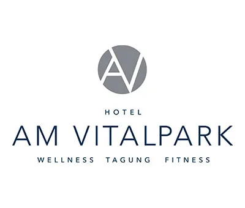
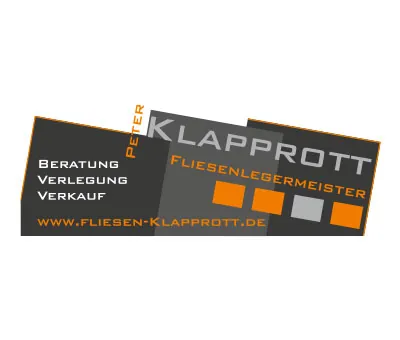
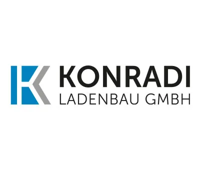
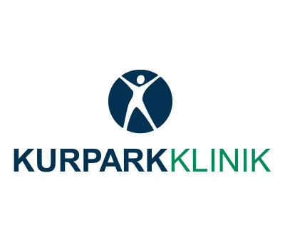
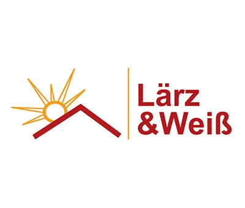
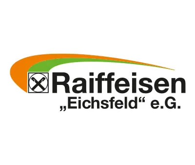
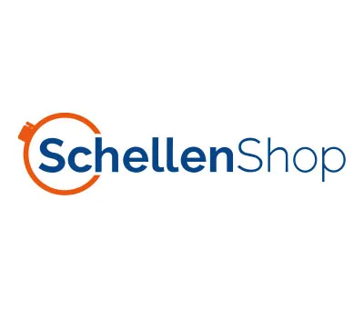
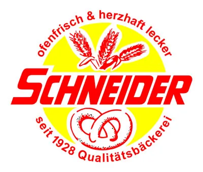
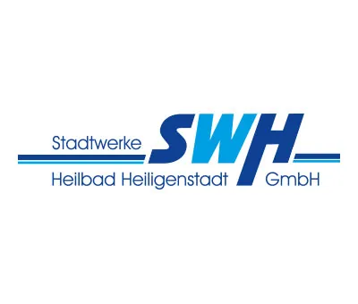
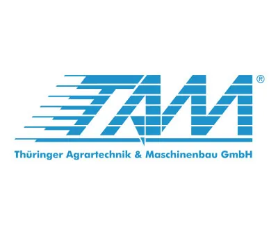
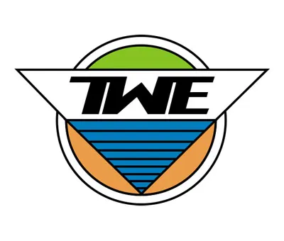
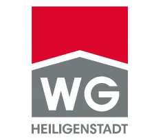
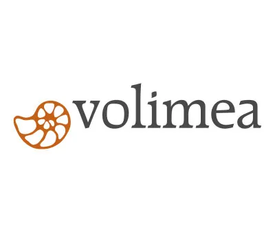
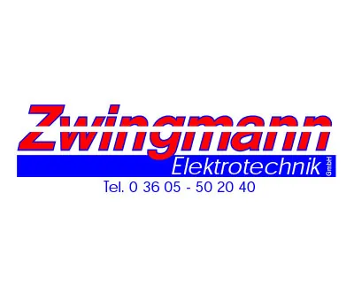
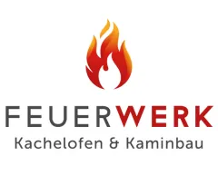
SOCIAL MEDIA BEIM SCH
Unser SCH.
Zur Facebook-SeiteAuch hier am Ball.
Aktuelle Facebook-Beiträge sind online verfügbar.
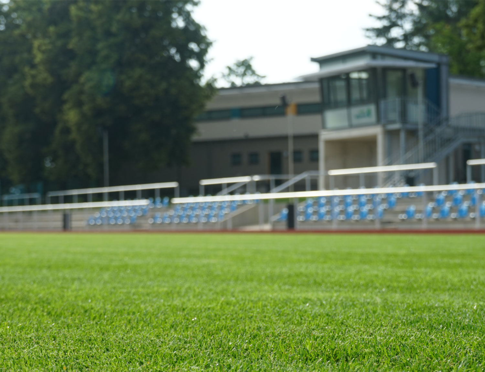
Näher dran.
@sc1911heiligenstadtAuf und neben
dem Platz.